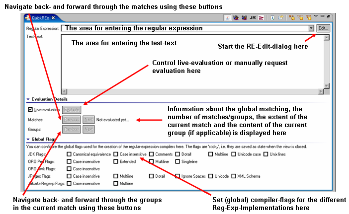
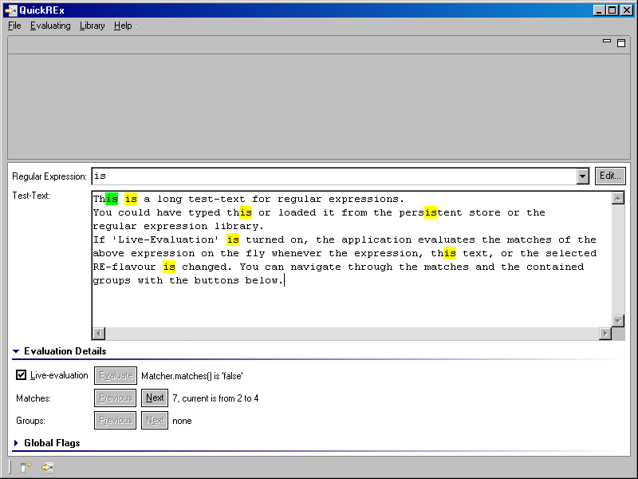
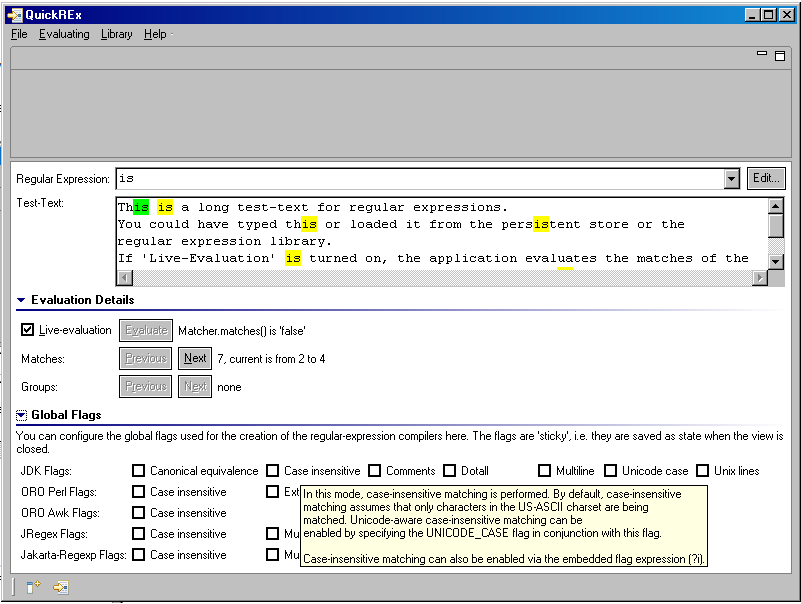
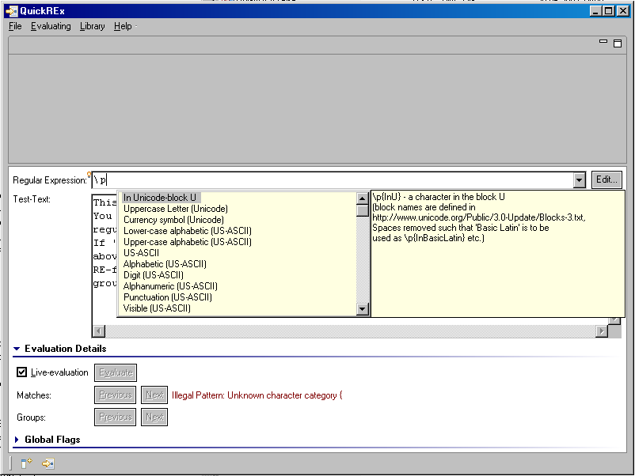

The QuickREx-View is the part of QuickREx in which you can design, test and apply regular expressions. It is displayed in the lower part of the application when you start QuickREx.
The view looks as displayed in the screenshot below.
The view is associated with the menu-entries in the menu "Evaluating". The menu is displayed below.
As you type text into the test-text area or a regular expression into the area for the regular expressions, the expression is constantly evaluated. The information on matches and groups is updated on the fly and matches are highlighted in the test-text.
Below is a screenshot of a situation where there are no groups but several matches. The match highlighted in green is the current one. All information on groups pertains to the current match.
The information next to the buttons used to navigate between the matches is to be interpreted as "There are 7 matches altogether, the current match (highlighted in green) has a start-index of 2 and an end-index of 4". As you can see there are no groups in the current match. You can navigate between the matches using the 'Previous' and 'Next' buttons near the label 'Matches'. If there were groups in the current match, you could navigate through the groups using the 'Previous' and 'Next' buttons near the label 'Groups'.
The above screenshot displays a case where there are groups in the current match. The current group is indicated by a bold font and the contents of the group are printed in the information-are next to the group-navigation buttons. The information there is to be interpreted as "There are 2 groups in the current match, the current group is the first one, containing 'This is a long test-text for '".
Evaluation of the regular expression can be done offline by unsetting the mark at 'Live-evaluation' and using the 'Evaluate'-button if evaluation is in order.
Also, evaluation of the regular expression takes place in a separate thread and may be cancelled by the user or is automatically cancelled if it takes too long. The dialog for cancelling the evaluation appears with a small delay so that you will not notice it during fast live-evaluation.
The time-out behaviour is configurable from the preference page available under 'Help > Preferences...' in the category 'QuickREx'. The preference page is displayed with the default settings in the screenshot below.
QuickREx offers the most widely used implementations of Regular Expressions in the Java-world:
The default implementation is the JDK-one. To change the implementation, use the menu "Evaluating" (see screenshot above). The expression will immediatly be re-evaluated. Also, the TAB-completion will adjust to offer the completions defined for the selected implementation.
You can set global compiler flags with any of the implementations QuickREx offers. This is done at the bottom of the view (see screenshot at the top of the page). To keep the view small, the "Global Flags"-section is folded away when the view is opened. To access it, click on the section-header.
The state of the flags is saved when you close the view or leave the Workbench. Note that there are different flags depending on the chosen implementation. Also note that the flags do behave slightly differently, depending on the implementation chosen. Check the tool-tip texts for the check-boxes to find details about the individual flags (see screenshot).
You can use TAB-completion for regular expressions in QuickREx. To get a list of proposals for completion of the current expression, hit 'Ctrl+Space' while editing in the area for regular expressions. An assistant will open as displayed in the below screenshot. Scrolling through the suggestions also updates the hint on the right side of the proposal. When you select a proposal, QuickREx will try to work out whether the already typed in characters should be part of an expression or not.
Note that due to the complexity of regular expressions, TAB-completion is not as accurate as it is e.g. in a Java-editor. Sometimes the proposed possibilities may result in illegal patterns. Generally, QuickREx tries to do a good job in guessing what you may want. To this end, the rules are roughly as follows:
If you want to extract only the matches for a particular regular expression from the current test-text, simply select 'Grep' in the menu "Evaluating" (see above). A dialog as displayed below will open, holding all matches separated by line-feeds. You can copy the result from the dialog to the clipboard to use it anywhere else as usually.